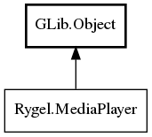

MediaPlayer
Object Hierarchy:

Description:
public interface MediaPlayer : Object
This interface maps UPnP AVTransport:2 methods to the plugin's specific implementation.
This interface is useful only when implementing Rygel renderer plugins. Instances of this interface are retrieved from
rygel_media_renderer_plugin_get_player().
Content:
Properties:
- public abstract
string playback_state { set; owned get; }
- public abstract
string[] allowed_playback_speeds { owned get; }
- public abstract
string playback_speed { set; owned get; }
- public abstract
string? uri { set; owned get; }
- public abstract
double volume { set; get; }
- public abstract
int64 duration { get; }
- public abstract
int64 size { get; }
- public abstract
string? metadata { set; owned get; }
A DIDLLite document describing the current media URI or null. The
document is either the one received from a UPnP control point or one generated by the implementing class.
- public abstract
string? mime_type { set; owned get; }
- public abstract
bool can_seek { get; }
- public abstract
bool can_seek_bytes { get; }
- public abstract
string? content_features { set; owned get; }
The contents of the contentFeatures.dlna.org HTTP header, containing
the 4th field of the protocol info for the current media URI. Or null if the header does not exist or the media does not have DLNA
information attached.
- public
string duration_as_str { owned get; }
- public abstract
int64 position { get; }
- public abstract
int64 byte_position { get; }
- public
string position_as_str { owned get; }
Methods:
- public abstract
bool seek (int64 time)
Seek to a point in the current media that is this many microseconds
after the start.
- public abstract
bool seek_bytes (int64 bytes)
Seek to a byte position in the current media.
- public abstract
string[] get_protocols ()
Return the protocols supported by this renderer, such as "http-get"
and "rtsp".
- public abstract
string[] get_mime_types ()
- protected
double play_speed_to_double (string speed)
Transform a fractional playspeed (e.g. "-1/4") to double. Input values
are expected to be valid rational numbers.
Inherited Members:
All known members inherited from class GLib.Object
- @new
- newv
- new_valist
- get_type
- get_class
- @ref
- unref
- ref_sink
- weak_ref
- weak_unref
- add_weak_pointer
- remove_weak_pointer
- @get
- @set
- get_property
- set_property
- get_data
- set_data
- set_data_full
- steal_data
- get_qdata
- set_qdata
- set_qdata_full
- steal_qdata
- freeze_notify
- thaw_notify
- dispose
- constructed
- notify_property
- connect
- disconnect
- add_toggle_ref
- remove_toggle_ref
- bind_property
- notify
- ref_count